| Area | Status |
|---|---|
| Crashes and invalid state in the schedule flow | Done tested on the emulator with real Bus B data |
| Single source for Ahead / On Time / Behind status | Done text, icon, color, zone, and log from one result |
| Next run / "1200+ mins" | Done |
| ETA and timing points explainable from the log | Done distance along the route |
| ANR (app freeze) caused by MQTT | New finding fixed |
| Live test with real GPS on a physical tablet | Not yet |
RESULT_OK. On cancel, the list is restored.ScheduleCache).firstOrNull() fallback, so the driver could follow another trip's stops.first(), !!, toInt() without guards.firstOrNull(), toIntOrNull(), ?: return.App.kt no longer swallows errors on the main thread.MqttClient.publish from the main thread, waiting more than 5 seconds.timeToWait = 3 seconds.c0230d1 (leaked publish loops) was correct, but not sufficient: still 225 disconnects in 6 minutes.| Build | MQTT disconnects (~6 minutes) | Per minute |
|---|---|---|
Client branch c0230d1 | 225 | 38.6 |
| + schedule fixes | 224 | 38.3 |
| + MQTT session fix (C9) | 0 | 0 |
All thresholds live in ScheduleAdherence.kt. Text, icon, color, marker/zone, and log all use one calculateScheduleStatus() result, in both Map and REP. Delta = scheduled − predicted arrival.
| # | Problem before | Fix |
|---|---|---|
| A1 | Duplicate thresholds: internal >0 / −300 / −600, UI ±30 / −300. +15 seconds = EARLY internally but "On Time" in the UI. | A single ScheduleAdherence module, used by Map and REP. |
| A2 | Status flickered due to GPS noise | 10-second hysteresis |
| A3 | Next run used list[1] and could point to the wrong run. The "last run" dialog appeared while a run was still left. | nextRunAfterActive() selects the next run explicitly |
| A4 | "Next run in 1250 mins", "Late by 1200+ mins" | No longer shifted to tomorrow. A difference of more than 4 hours is treated as stale data and shown as "Next run at HH:mm". |
| A5 | Late formula jumped: +10 s became "late 10s", −10 s became "late 310s" | Shortfall against the minimum layover (300 s, value from the old code) |
| A6 | Multiple clocks mixed, midnight not handled | One clock for all calculations. Time parsing is safe across midnight, malformed input is skipped. |
| A7 | ETA used straight-line distance. On winding routes the distance actually increased as the bus got closer. | Remaining distance measured along the route polyline |
| A8 | Fallback speed = distance to the timing point divided by the time of one full trip | Divided by the scheduled time to that same timing point. speedSource is logged. |
| A9 | Logs were not enough to explain the status | One ScheduleAdherence line with all inputs and the result, no tokens |
| Suite | Result | Coverage |
|---|---|---|
ScheduleAdherenceTest | 18/18 | §18A cases (Ahead +120, On Time −10, Behind −180), threshold boundaries, hysteresis, midnight, next run, countdown, speed source |
RouteMatcherTest | 5/5 | REP vs Sign On placeholder, trimmed roster, real Bus A + B payload: 27 correct launches |
MapActivityTest (existing) | 5/5 | No regressions |
ExampleUnitTest | 1/1 |
| Scenario | Result |
|---|---|
| Fetch Roster Bus B | Pass 20 items shown |
| Sign On completed, then wait 15 seconds of polling | Pass list starts from REP, not reset |
| Force-stop, then Use Cache | Pass Sign On does not repeat |
| Process killed in the middle of REP | Pass REP still on top, app automatically enters Schedule |
| Process killed while the "Trip Completed" dialog is showing | Pass trip does not repeat (twice: REP and 50B) |
| Route for REP 06:29 | Pass selectedIdx=1 (previously 0) |
| 90-second simulation after the MQTT fix | Pass 0 ANRs |
| Cancel on the Confirmation screen | Not testable a single checkbox launches immediately |
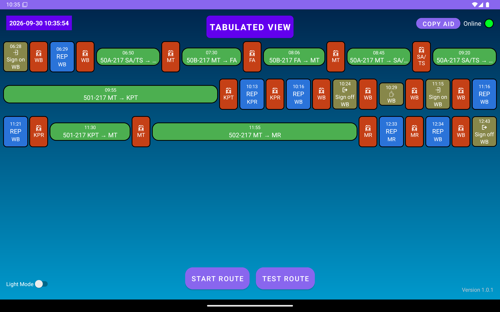
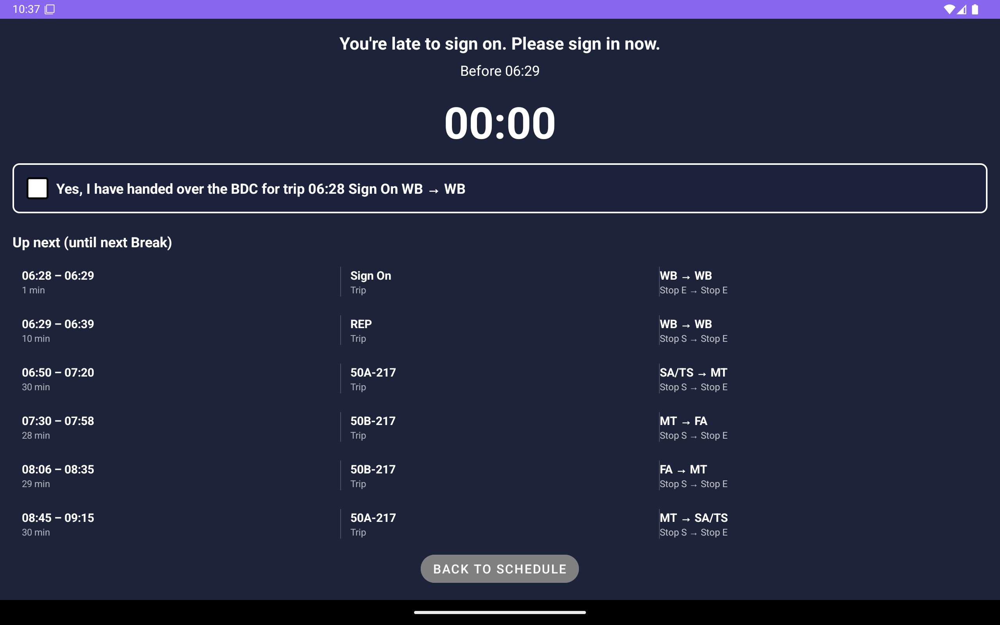
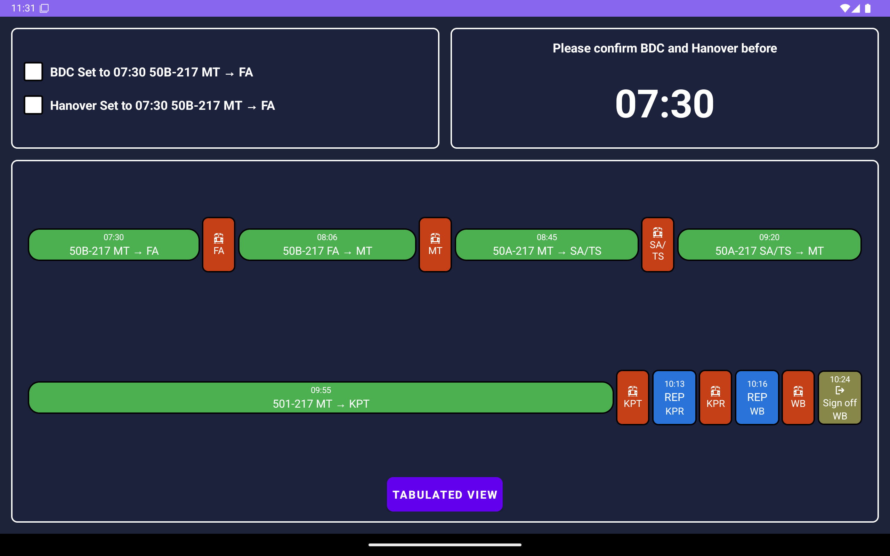
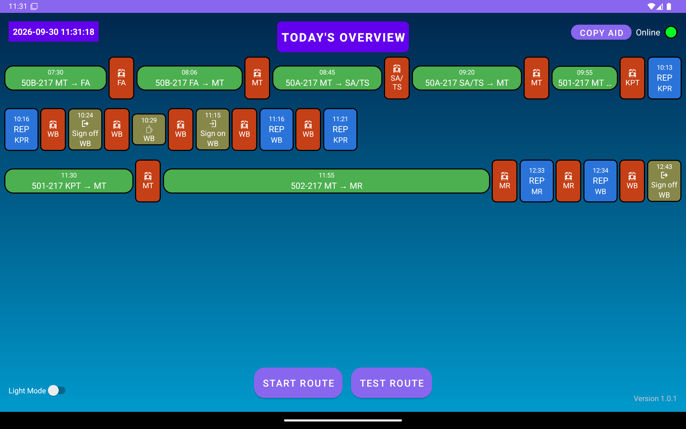
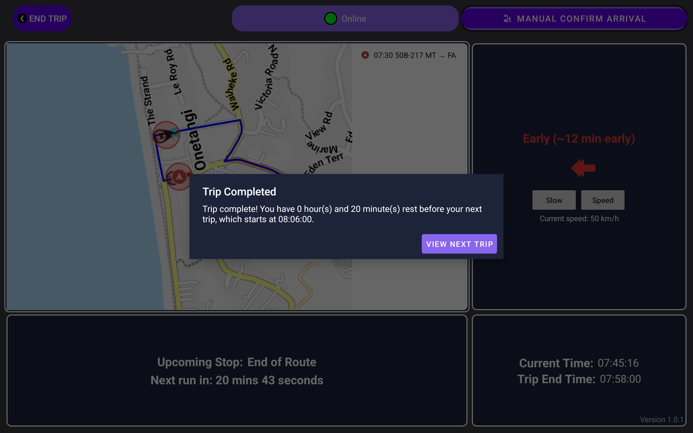
MapActivity: Committed schedule cache after completion | remaining=16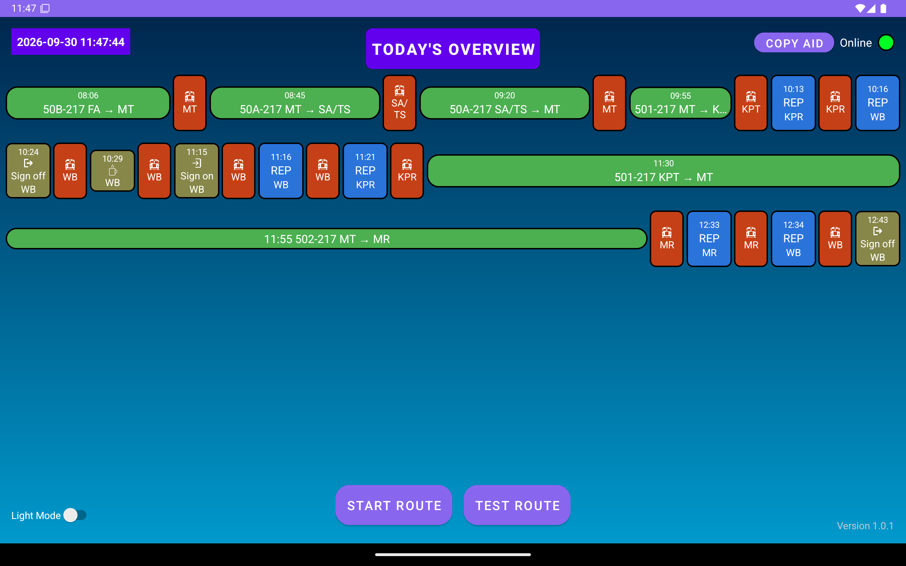
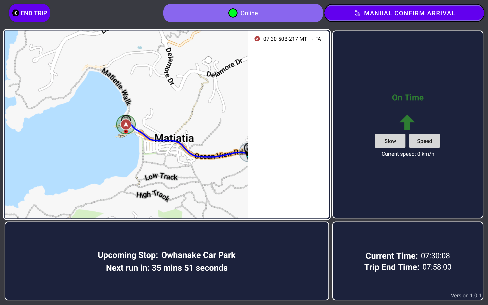
speedSource=SCHEDULE_AVERAGE_FALLBACK, deltaSec=-9.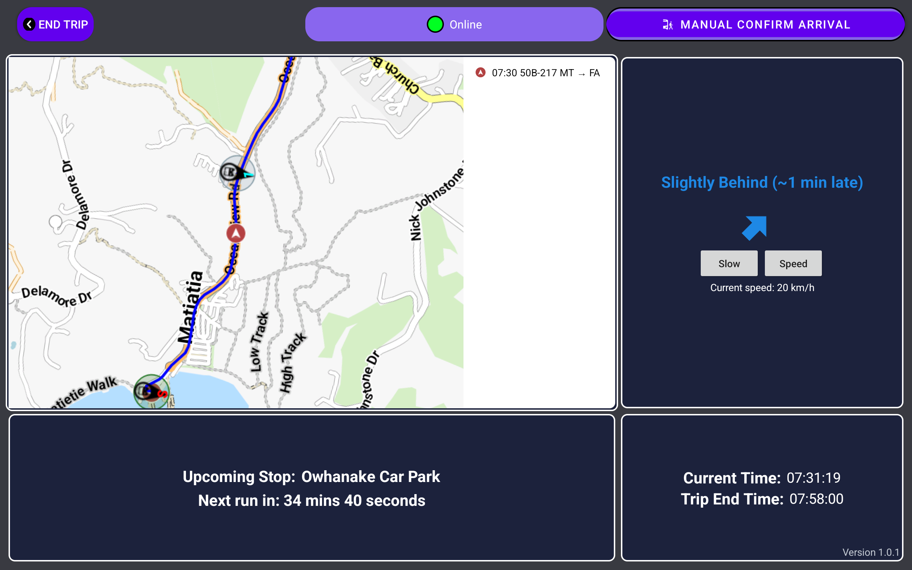
deltaSec=-98 status=SLIGHTLY_BEHIND.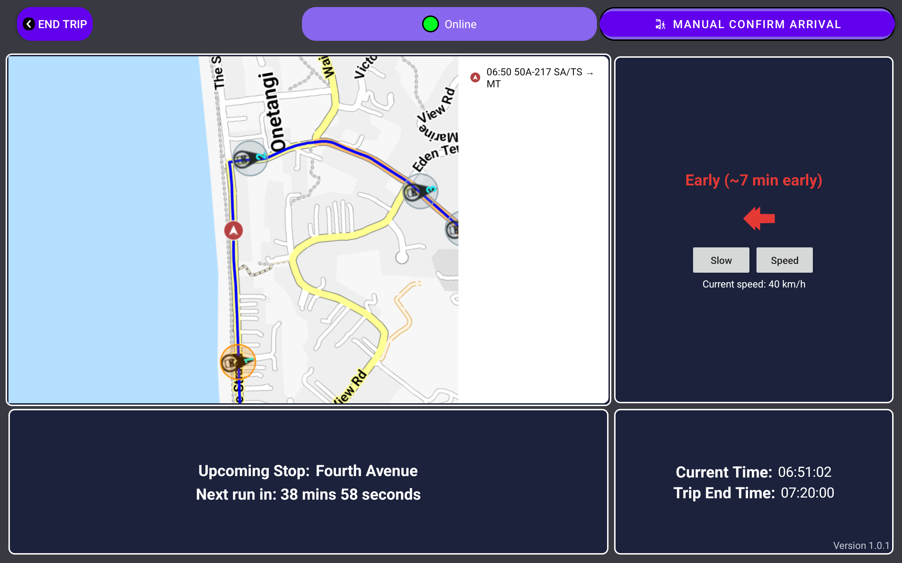
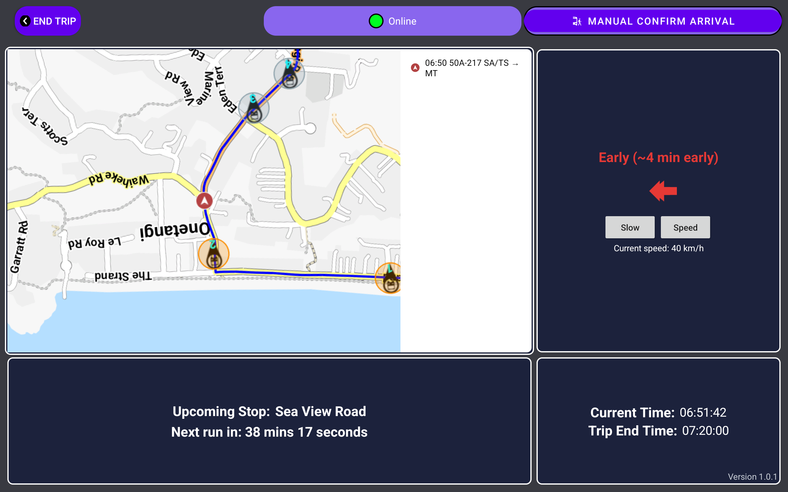
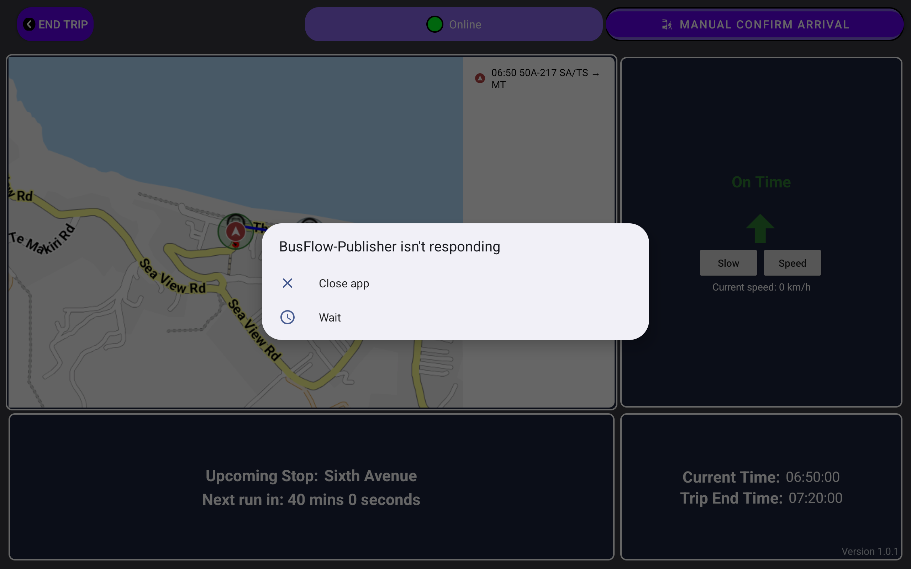
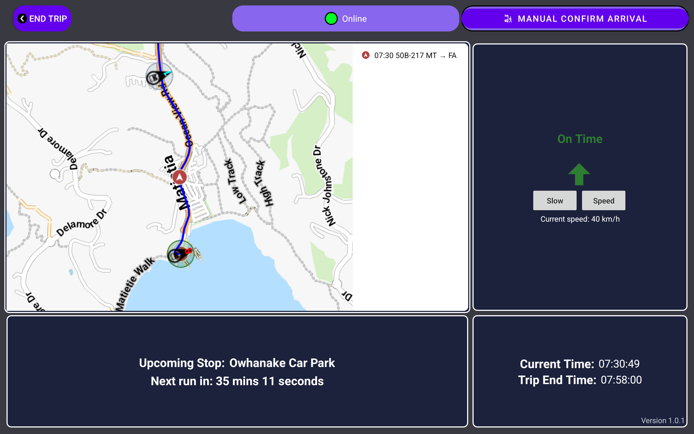
NEXT_RUN_MIN_LAYOVER_SECONDS). The value comes from the old code. Is this an operational rule?MqttManager.kt.vlrskey.jks is committed to the repo.RepActivity replaces the global crash handler.fix/schedule-stabilization branch, one commit per logical change.config of all three devices (requires approval).ScheduleAdherence log, then match the UI against the numbers in the log.